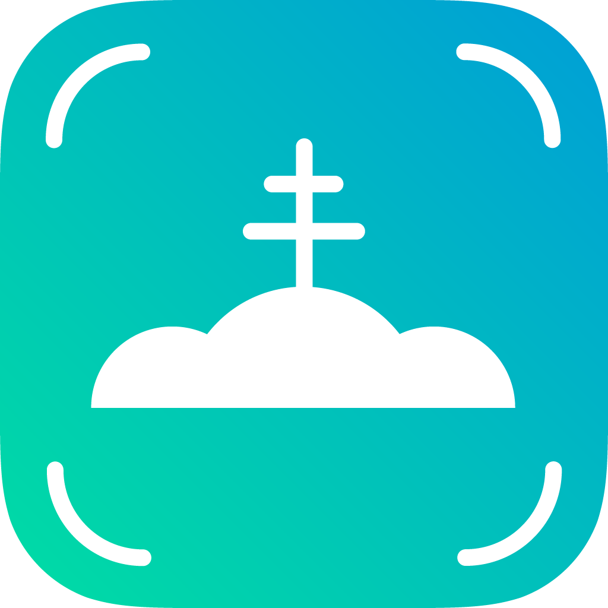

Naturae Slovakia
iOS App - AR Experience
Developer: Juraj Kebis
Status: Finished - Not available
Project development duration: 2 months
Start of the development: March 2021

Developer: Juraj Kebis
Status: Finished - Not available
Project development duration: 2 months
Start of the development: March 2021